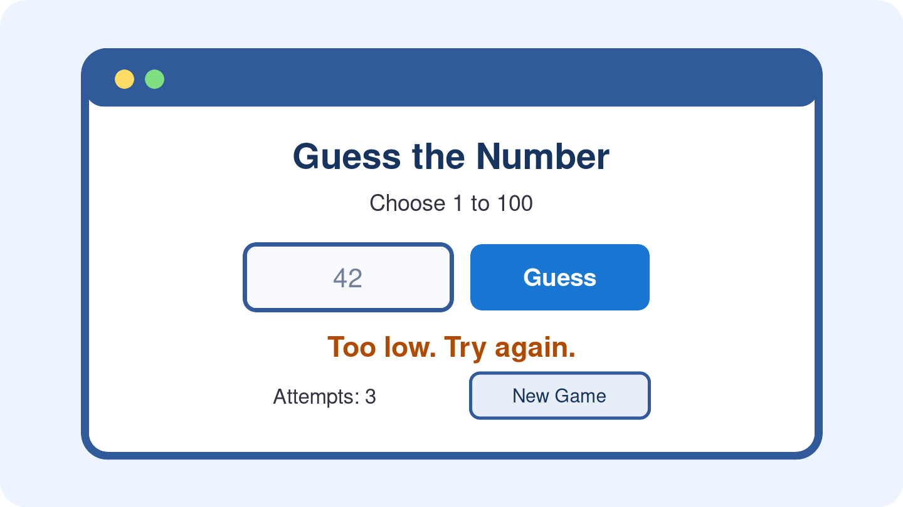
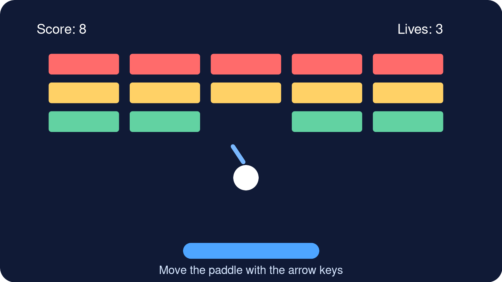
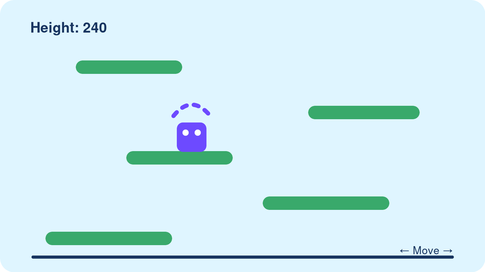
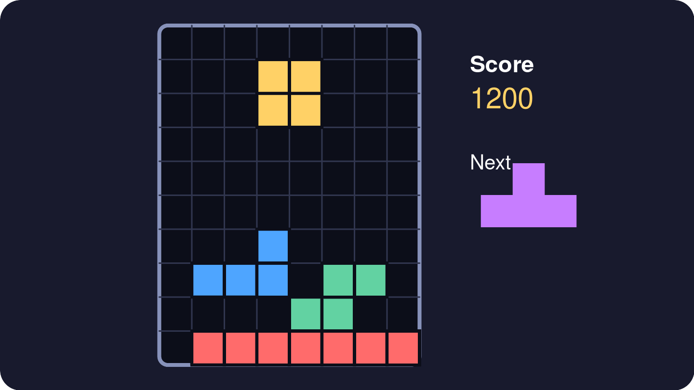
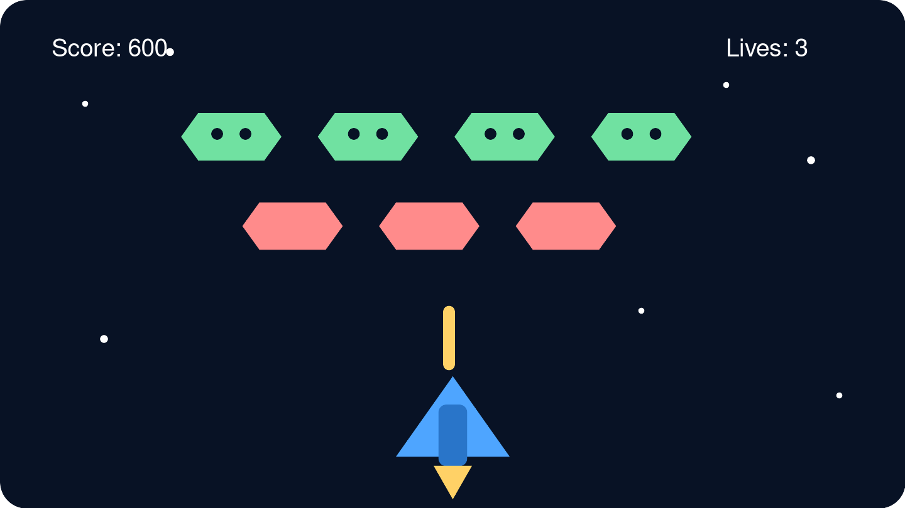

flowchart TD P["Write<br/>prompt"] --> C["Copy complete<br/>HTML"] C --> L["Paste into<br/>LiveCodes"] L --> R["Run and save<br/>Version 1"] R --> T["Test and report<br/>one bug"] T --> V["Fork<br/>Version 2"] V --> A["Run all<br/>tests again"]
9 Lesson 7: Create Games with AI — Prompt, Test, Debug, Persist
Duration: 2 hours
TipYour Path
You are in: Lesson 7
Before this: Lesson 6
After this: Lesson 8
Workbook page: Student Workbook -> Lesson 7 - AI Game Prompt and Debug Log
9.1 Start Here
Vibe coding is a casual name for creating software by telling AI what you want in everyday language. A large language model (LLM) is a type of AI that can understand your request and write most of the code. AI researcher Andrej Karpathy introduced the term vibe coding in February 2025 (Merriam-Webster 2025).
People disagree about vibe coding. It can help people create and test ideas quickly, and modern LLMs can perform very well on many coding tasks (METR 2026). However, AI can still produce bugs, unsafe choices, or code that is difficult to understand. Coding tests also do not represent every real project (OpenAI 2026).
In this lesson, you will use AI while staying in control. You will describe your goal, test the result, report problems, and keep a working version.
Your teacher opens My First Page in LiveCodes. LiveCodes shows the code and the result together. The teacher selects Run. The page starts at Points: 0. The teacher selects Add points two times. The number changes from 0 to 1 to 2.
Then the teacher changes points + 1 to points + 2 and runs the page again. Now two clicks change the number from 0 to 2 to 4.
Code means instructions a computer can follow. The teacher did not write every line of code. The teacher described the page to AI, pasted the complete answer into LiveCodes, ran it, tested it, and fixed a problem.
That is the process you will practice today.
ImportantToday’s Big Rule
Always ask for one complete, self-contained HTML document.
AI may call this a complete HTML file. The phrase describes the full code. You do not need to download a file before you begin.
Paste the complete code into LiveCodes. Do not ask for a code fragment, a patch, or only the changed lines.
These phrases will help you follow the lesson. You do not need to memorize them now.
| Helpful phrase | Simple meaning |
|---|---|
| vibe coding | Telling AI what a program should do and letting AI write most of the code |
| large language model (LLM) | A type of AI that works with language and can write code |
| complete HTML document or file | All the webpage structure, appearance, and behavior in one code block |
| self-contained | Works without other files or internet items |
| requirement | Something the game must do |
| feature | A part or action in the game |
| code fragment | Only one part of the code |
9.2 Why This Matters
AI can help people create games, webpages, and many other applications. You do not need to understand every line before you begin experimenting. You do need clear English, safe habits, tests, and persistence.
AI-generated code can be wrong. A game may not start. A button may not work. One correction may break an older feature. A bug is not the end of the work. It is information that helps you write the next prompt.
TipWrite in the Book
Write your prompt, tests, bug report, and version notes in this book. In the HTML edition, you can open a complete game in LiveCodes.
A perfect game is not required. Your learning process is the important evidence.
9.3 Today You Will
By the end of this lesson, you will:
- Identify the
<head>,<body>, and<script>parts of a webpage. - Use LiveCodes to run and change one interactive webpage.
- Explain HTML, CSS, and JavaScript in simple English.
- Ask Copilot Chat for one complete HTML game document.
- Paste, run, and save a LiveCodes project.
- Write tests before you run the game.
- Report a bug with expected and actual results.
- Fork a new project version without losing the last working version.
- Explain how a baseline gives AI useful context.
- Use persistence when the first result does not work.
NoteLesson Reference
Theme: Clear English helps people create, test, and improve software with AI.
AI Focus: Webpage structure, LiveCodes editing, complete-document prompting, human testing, debugging, context, and revision.
ESL Focus: Webpage-part vocabulary, requirements, expected/actual result language, and process explanations.
Content Objective: Students will inspect and change one simple webpage, then create or plan one self-contained HTML game in LiveCodes and document a test-and-debug cycle.
Language Objective: Students will identify webpage parts and describe a goal, change, expected result, actual result, bug, and next step using simple English:
The <body> shows...
The <script> waits for...
Each click...
I changed... The result was...
I want to create...
I expected...
The actual result was...
The bug happens when...
I will persist by...9.4 Core Idea
9.4.1 One File Can Hold a Small Application
Your game will use one self-contained HTML document. This means all its code can stay together in the LiveCodes HTML area.
| Part | Simple job | Example |
|---|---|---|
| HTML | Gives the page structure | A heading, number box, and button |
| CSS | Controls appearance | Colors, spacing, and button size |
| JavaScript | Controls behavior | Checks the guess and changes the message |
The CSS can live inside a <style> element. The JavaScript can live inside a <script> element. A browser can read all three parts together.
9.4.2 Meet a Webpage in LiveCodes
LiveCodes is a coding environment that runs in your browser. An editor is a place where you read and change code. LiveCodes shows the code and the result together. You do not need a LiveCodes account.
Many webpages use this basic structure. The <script> part is optional. It adds actions or changes when a page needs them.
<!doctype html>
<html lang="en">
<head>
<meta charset="utf-8">
<title>My First Page</title>
</head>
<body>
<h1>Point Counter</h1>
<p id="points" aria-live="polite">Points: 0</p>
<button id="add-points" type="button">Add points</button>
<script>
let points = 0;
const pointsText = document.querySelector("#points");
const addButton = document.querySelector("#add-points");
addButton.addEventListener("click", function () {
points = points + 1;
pointsText.textContent = "Points: " + points;
});
</script>
</body>
</html>| Page part | Simple job | This example |
|---|---|---|
<head> |
Gives the browser information about the page | The title appears in the browser tab. |
<body> |
Holds the words and other content people see | It shows a heading, a point total, and a button. |
<script> |
Gives optional instructions for actions or changes | It waits for a click, adds one point, and changes the total. |
HTML creates the heading, point total, and button. CSS can change how they look. JavaScript gives the page repeated behavior. It remembers the number, waits for each click, and shows the new total.
NoteHead and Header Are Different
The <head> gives the browser information about the page. It is usually not visible inside the page. A <header> is different. It is an optional visible part that can go inside the <body>.
- Select Open My First Page in LiveCodes. Find the code area and the result area.
- Select Run. Confirm that the page starts at
Points: 0. - Select Add points three times. Watch the total change to
1,2, and3. - Find
<head>,<body>, and<script>in the code. - Change
points + 1topoints + 2. Select Run again. Select Add points two times and confirm that the total changes to2and4.
If the example does not appear in the editor, copy the code above and paste it into the HTML code area.
If LiveCodes is not available, read the code and point to <head>, <body>, and <script>. Trace the instructions in the script. Predict the totals 0, 1, and 2. Then change points + 1 to points + 2 on paper and predict 0, 2, and 4.
Use these sentence frames:
The <body> shows __________.
The <script> waits for __________.
Each click __________.
I changed __________. The result was __________.9.4.3 The AI Coding Loop
In simple English: describe the game, copy the complete HTML, paste it into LiveCodes, run it, test it, fix one problem, and fork a new version.
9.4.4 Safety Before You Ask AI
WarningPrivacy and Code Safety
- Do not type private information into Copilot Chat.
- Do not paste passwords, access codes, API keys, or private work files.
- Check the provider’s privacy and data settings when possible.
- Opting out of training or data sharing is helpful, but it is not enough.
- Ask for no network requests, trackers, external libraries, or downloads.
- Read the visible result and test it before you trust it.
- AI helps, but you make the final decision.
9.5 Key Vocabulary
Key Vocabulary Match
Complete two short rounds. Choose the word that matches each meaning and example.
Not saved yet
9.6 Sentence Frames
I want to create __________.
Create one complete HTML document.
The game should __________.
My project name is __________.
I expected __________.
The actual result was __________.
The bug happens when __________.
Return the complete corrected HTML document.
I saved the working version as __________.
I will persist by trying __________.9.6.1 Use the Words
After the matching activity, practice the words with a partner.
Round 1 speaking
The code is in one HTML document.
HTML gives the page __________.
CSS controls __________.
JavaScript controls __________.
I run the project in __________.
My prompt gives AI context about __________.
My baseline is __________.Round 2 bug report
My test was __________.
I expected __________.
The actual result was __________.
The bug happens when __________.
I will debug the problem by __________.
I saved this version as __________.
My backup is __________.
I will persist by __________.9.7 Lesson Agenda
| Time | Activity | Purpose |
|---|---|---|
| 10 min | Start Here: run and change My First Page in LiveCodes | See the editor workflow. |
| 15 min | Vocabulary, webpage structure, and first LiveCodes edit | Identify the main parts and change one result. |
| 15 min | Complete-document prompting and the LiveCodes workflow | Prepare a strong request. |
| 20 min | Guided practice: generate, paste, and run Guess the Number | Create the first version. |
| 15 min | Write tests, find a bug, and request the complete corrected file | Practice test-first debugging. |
| 10 min | LiveCodes versions, forks, one backup, and the short Git note | Protect working projects. |
| 20 min | Baseline comparison and five-game prompt gallery | Compare starting points and explore. |
| 10 min | Pair speaking: explain a prompt, test, bug, and next version | Practice process English. |
| 5 min | Reflection and exit ticket | Record the main learning. |
9.8 Guided Practice
9.8.1 The Complete-Document Instruction
Copy this instruction into every new-game prompt:
Create one complete, self-contained HTML document.
Put all CSS inside a <style> element.
Put all JavaScript inside a <script> element.
Do not use external libraries, images, fonts, audio, or network requests.
The document must run in a browser.
Return the entire HTML document in one code block.
Start with <!doctype html>.
Do not return partial code or only the changed section.9.8.2 LiveCodes Workflow
TipBuild Version 1
LiveCodes keeps the code and the result in one place. You do not need an account or a separate text editor.
- Write the expected behavior in English.
- Send the complete-document prompt to Microsoft Copilot Chat.
- Copy the complete HTML code block.
- Open My First Page in LiveCodes. Select all the code in the HTML area.
- Paste the new complete HTML. Select Run.
- Give the project a clear name, such as
guess-number-v1. - Select Project > Save. Complete every test.
TipFix a Bug in Version 2
- Copy all the current HTML from the LiveCodes HTML area.
- Report one bug with the expected and actual results. Paste the complete HTML into the debugging prompt.
- In LiveCodes, select Project > Fork (New Project).
- Give the fork a clear name, such as
guess-number-v2-fixed-input. - Replace its HTML with the complete corrected answer. Select Run.
- Test the corrected feature and every old feature again.
If LiveCodes is unavailable, use the printed code and teacher sample. You can still identify the code parts, write expected results, complete the test table, and write a bug report.
9.8.3 Prompt Pack 1: Guess the Number

Copy and complete this prompt:
I am a beginner. Create a Guess the Number game.
The game must:
- choose a secret whole number from 1 to 100;
- show clear instructions;
- include a number input and a Guess button;
- say "Too low," "Too high," or "Correct";
- count attempts;
- reject empty, non-number, and out-of-range input with a helpful message;
- include a New Game button that resets the attempt count and chooses a new number;
- work with a keyboard and visible buttons.
Create one complete, self-contained HTML document.
Put all CSS inside a <style> element.
Put all JavaScript inside a <script> element.
Do not use external libraries, images, fonts, audio, or network requests.
The document must run in a browser.
Return the entire HTML document in one code block.
Start with <!doctype html>.
Do not return partial code or only the changed section.Name the first LiveCodes project:
guess-number-v19.8.4 Test Before You Fix
| Test | Expected Result | Actual Result | Pass / Needs Work |
|---|---|---|---|
| Enter a low guess | The game says “Too low.” | ||
| Enter a high guess | The game says “Too high.” | ||
| Enter the correct number | The game says “Correct.” | ||
| Enter an invalid value | The game shows a helpful message. | ||
| Start a new game | Attempts return to zero and the number changes. |
Expected result: play Guess the Number
One possible expected result. AI results can vary. Write your expected behavior before you start this example.
The player enters a number from 1 to 100. The game reports Too low, Too high, Correct, or a helpful input message and counts valid attempts.
Game stopped. Select Start game when you are ready.
View lesson HTML
You may not know the secret number. Use several guesses, or ask the teacher how to temporarily show the number for testing.
9.8.5 Debugging Prompt
ImportantComplete-File Rule
Paste the current complete HTML document. Ask for the complete corrected HTML document. Do not replace your working Version 1.
Here is my current complete HTML document.
I expected: __________.
The actual result was: __________.
The bug happens when: __________.
Find the bug and correct it.
Keep all existing working features.
Do not add external libraries, images, audio, fonts, or network requests.
Return the complete corrected HTML document, not a fragment.
[PASTE THE COMPLETE CURRENT HTML HERE]Fork the project and name Version 2:
guess-number-v2-fixed-__________Optional extension: Add an Easy 1–20 mode and a Standard 1–100 mode. Request the complete updated HTML document.
9.8.6 Test-First Habit
Professional developers often use test-driven development. A common cycle is Red, Green, Refactor:
- Red: A test shows that a feature is missing or broken.
- Green: Make the smallest change that passes the test.
- Refactor: Make the code clearer without changing the behavior.
Today, you will use a beginner version:
Write what should happen.
Run the game.
Mark Pass or Needs work.
Fix one problem.
Run every test again.This habit is more important than getting a perfect first answer (Fowler 2023).
9.8.7 Versions in LiveCodes
Version control means keeping a clear history of changes. Today, LiveCodes project names will show the history:
guess-number-v1
guess-number-v2-fixed-input
guess-number-v3-new-colorsRules:
- Select Project > Save for Version 1.
- Select Project > Fork (New Project) before a major change.
- Add a short description to the new project name.
- Use Project > Open to return to a saved version.
- Return to the previous project if the new version breaks.
flowchart TD
V1["Version 1<br/>works"] --> V2["Version 2<br/>bug fix"]
V2 --> V3["Version 3<br/>new feature"]
V3 --> B{"New problem?"}
B -->|"Yes"| V2
B -->|"No"| K["Keep<br/>Version 3"]
In simple English: fork a new project before a large change. If the change breaks the game, open the last working version.
TipMake One Permanent Backup
LiveCodes saves projects in this browser and device. Browser storage can be lost. At the end of your work, select Project > Export > Export Source (ZIP). Keep the ZIP as a permanent backup. You do not need to export before you begin.
NoteLearn More Later: Git
Professional programmers often use tools such as Git. Git records changes and helps people return to earlier versions. You do not need Git in this lesson (Chacon and Straub 2014).
9.9 Independent Practice
9.9.1 Starting from a Baseline
A baseline is a working starting point. It gives AI code, structure, and behavior as context.
Compare these prompts.
Weak prompt:
Create a brick-breaker game.Context-rich prompt:
The complete HTML below is my working baseline.
First, identify its existing features.
Keep all working controls and game rules.
Add one Pause/Continue button.
Do not rebuild the game from scratch.
Do not use external files or libraries.
Return one complete updated HTML file.
[PASTE THE COMPLETE BASELINE HTML HERE]Open the teacher-provided baseline in LiveCodes:
Open Brick Breaker Baseline in LiveCodesIn a printed, PDF, or DOCX lesson, your teacher can provide the baseline code.
The baseline comes from a public-domain code sample in the Gamedev Canvas Workshop. Read the adjacent source and license note before you change or share it (Mazur 2015).
“If I have seen further it is by standing on the shoulders of giants.”
— Isaac Newton, in a letter to Robert Hooke, 5 February 1675/76 (Newton 1676)
People often make progress by learning from earlier work. A baseline can produce a stronger result than a vague request from scratch. Building on earlier work also brings responsibilities:
- check the license;
- preserve credit when required;
- understand the important behavior;
- make your own meaningful change;
- test every old and new feature.
9.9.2 Prompt Pack 2: Brick Breaker

I am a beginner. Create a Brick Breaker game.
Include a paddle, a moving ball, a grid of bricks, keyboard controls, score,
three lives, ball and paddle collisions, brick collisions, win and game-over
messages, a Restart button, visible on-screen controls, and clear instructions.
Create one complete, self-contained HTML document. Put all CSS in <style> and all
JavaScript in <script>. Use only original geometric shapes. Do not use external
libraries, images, fonts, audio, or network requests. The document must run in
a browser.
Return the entire HTML document in one code block. Start with <!doctype html>.
Do not return partial code or only the changed section.| Test | Expected | Actual | Status |
|---|---|---|---|
| Ball hits wall or paddle | It bounces. | ||
| Ball hits brick | Brick leaves; score rises. | ||
| Player misses ball | One life leaves. | ||
| Last brick clears | Win message appears. | ||
| Restart selected | Game resets. |
Expected result: play Brick Breaker
One possible expected result. AI results can vary. This advanced game is optional.
Move the paddle, bounce the ball, clear the bricks, protect three lives, and use Restart after a win or game over.
Game stopped. Select Start game when you are ready.
View lesson HTML
Debug example:
Here is my current complete HTML document.
I expected the ball to bounce from the paddle.
The actual result was that the ball passed through the paddle.
Keep every working feature and return the complete corrected HTML document.Optional extension: Add a Pause/Continue button. Request the complete updated HTML document.
9.9.3 Prompt Pack 3: Platform Jumper

I am a beginner. Create a Platform Jumper game.
Include left and right movement, gravity, automatic jumping, platforms, a
height or platform score, a fall/game-over state, a Restart button, visible
on-screen controls, and clear instructions.
Create one complete, self-contained HTML document. Put all CSS in <style> and all
JavaScript in <script>. Use only original geometric shapes. Do not use external
libraries, images, fonts, audio, or network requests. The document must run in
a browser.
Return the entire HTML document in one code block. Start with <!doctype html>.
Do not return partial code or only the changed section.| Test | Expected Result | Actual Result | Pass / Needs Work |
|---|---|---|---|
| Press left and right | The player moves in both directions. | ||
| Land on a platform | The player stays above it and jumps again. | ||
| Move near an edge | The player stays inside the intended play area. | ||
| Reach a higher platform | The score increases. | ||
| Fall, then select Restart | The game resets. |
Expected result: play Platform Jumper
One possible expected result. AI results can vary. This advanced game is optional.
Move left or right while the player jumps automatically. Land on platforms, gain height, and restart after a fall.
Game stopped. Select Start game when you are ready.
View lesson HTML
Debug example:
Here is my current complete HTML document.
I expected the player to land on a platform.
The actual result was that the player fell through it.
Keep every working feature and return the complete corrected HTML document.Optional extension: Add one temporary moving platform. Request the complete updated HTML document.
9.9.4 Prompt Pack 4: Falling Blocks

I am a beginner. Create a Falling Blocks puzzle.
Include falling geometric pieces, left and right movement, rotation, fast drop,
completed-row clearing, score, a game-over state, a Restart button, visible
on-screen controls, and clear instructions.
Create one complete, self-contained HTML document. Put all CSS in <style> and all
JavaScript in <script>. Use only original geometric shapes and generic
language. Do not copy commercial game branding. Do not use external libraries,
images, fonts, audio, or network requests. The document must run in a browser.
Return the entire HTML document in one code block. Start with <!doctype html>.
Do not return partial code or only the changed section.| Test | Expected Result | Actual Result | Pass / Needs Work |
|---|---|---|---|
| Use move and fast-drop controls | The piece responds and stays in the grid. | ||
| Rotate near a wall | The piece rotates only to a valid position. | ||
| Complete a row | The row clears and score increases. | ||
| Block the new-piece area | A game-over message appears. | ||
| Select Restart | The board and score reset. |
Expected result: play Falling Blocks
One possible expected result. AI results can vary. This advanced game is optional.
Move, rotate, and drop geometric pieces. Complete rows to clear them, increase the score, and restart after game over.
Game stopped. Select Start game when you are ready.
View lesson HTML
Debug example:
Here is my current complete HTML document.
I expected a complete row to disappear.
The actual result was that the row stayed on the board.
Keep every working feature and return the complete corrected HTML document.Optional extension: Add a next-piece preview. Request the complete updated HTML document.
9.9.5 Prompt Pack 5: Space Defender

I am a beginner. Create a Space Defender game.
Include left and right player movement, firing, rows of descending geometric
enemies, collision detection, score, lives, win and game-over states, and a
Restart button, visible on-screen controls, and clear instructions.
Create one complete, self-contained HTML document. Put all CSS in <style> and all
JavaScript in <script>. Use only original geometric shapes and generic
language. Do not copy commercial game branding. Do not use external libraries,
images, fonts, audio, or network requests. The document must run in a browser.
Return the entire HTML document in one code block. Start with <!doctype html>.
Do not return partial code or only the changed section.| Test | Expected Result | Actual Result | Pass / Needs Work |
|---|---|---|---|
| Press left and right | The player moves but stays in the play area. | ||
| Press the fire control | One shot appears. | ||
| Hit one enemy | One enemy disappears and score increases once. | ||
| Let an enemy reach the bottom | A life or game state changes as instructed. | ||
| Win or lose, then select Restart | The correct message appears and the game resets. |
Expected result: play Space Defender
One possible expected result. AI results can vary. This advanced game is optional.
Move the player, fire at descending geometric enemies, protect three lives, and restart after a win or game over.
Game stopped. Select Start game when you are ready.
View lesson HTML
Debug example:
Here is my current complete HTML document.
I expected one shot to remove one enemy.
The actual result was that the score changed many times for one hit.
Keep every working feature and return the complete corrected HTML document.Optional extension: Add one shield that can take three hits. Request the complete updated HTML document.
TipGames Are Only the Beginning
The same process can help you create:
- a personal webpage;
- a community-event page;
- a study timer;
- a vocabulary quiz;
- a to-do list;
- a simple calculator;
- an interactive story.
Start small. Describe the requirements. Ask for one complete HTML document. Test the result. Improve one feature at a time.
9.9.6 Save Your Lesson Evidence
Write your real prompt, tests, bug, debug request, project names, baseline comparison, and persistence reflection below.
AI Game Prompt and Debug Log
Document the process. A perfect game is not required.
Not saved yet
9.10 Pair Speaking or Presentation Task
Partner A explains:
I wanted to create __________.
My first project was __________.
I expected __________.
The actual result was __________.
I saved a new version because __________.Partner B responds:
One clear part is __________.
One test you can add is __________.
One next step is __________.Switch roles. You may describe a planned game if Copilot Chat was unavailable.
9.11 Reflection
Answer in two or three sentences:
One mistake that helped me learn was __________.
I persisted by __________.
AI helped with __________, but I checked __________.9.12 Exit Ticket
Write:
- one complete-HTML instruction;
- one expected result;
- one bug sentence;
- one clear project name for Version 2;
- one reason a baseline can help.
9.13 Homework
Estimated time: 30-45 minutes.
Choose Brick Breaker, Platform Jumper, Falling Blocks, or Space Defender.
Tasks:
- Complete or revise the full-file prompt.
- Write five expected-behavior tests.
- Write one possible bug report.
- Write a project name for Version 1 and Version 2.
- Choose five Lesson 7 words for your
Vocabulary Log. For each word, write a simple meaning and one sentence about your game.
What to complete:
Lesson 7 - AI Game Prompt and Debug Log- updated
Vocabulary Log
Generating or running the advanced game is optional.
Privacy reminder: Do not type private information, passwords, access codes, API keys, or private files into AI. Opting out is helpful, but it is not enough. Do not request external trackers or unknown downloads.
Optional extension: Create one complete HTML document for a webpage, study timer, vocabulary quiz, calculator, or interactive story. Test it before you use it.
TipOptional Colab Lab
This lab is optional. It practices the English for a coding prompt and a 60-second project explanation. It does not create or run HTML, and it does not require GitHub or a coding tool.
Open the Lessons 7-8 Code Prompt and Speaking Lab in Colab:
Do not paste a complete game, private code, names, passwords, or private information into the notebook.
After any AI answer, say: “I checked the AI answer before I used it.”
ImportantRequired Workbook Evidence
Complete this workbook evidence:
Student Workbook -> Lesson 7 - AI Game Prompt and Debug Log